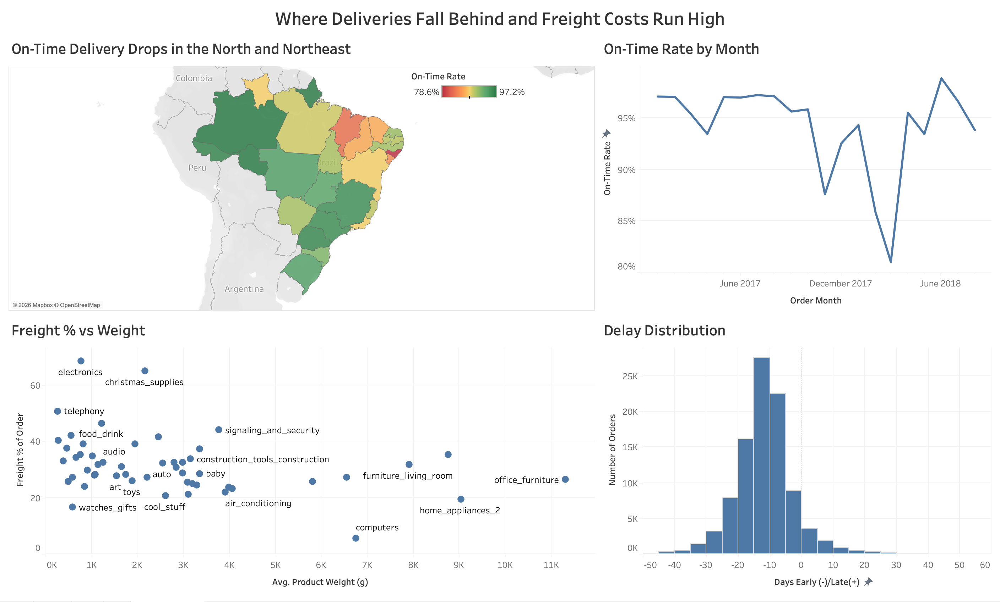

03.Projects
Three end-to-end builds. Each links to full code on GitHub.
Delivery Performance Analysis
01
Python · SQL · Excel · Tableau · 96,470 real orders

What drives late deliveries, and what do they cost? Cleaned and joined six tables of
real Olist e-commerce data in Python, rolling order items up before the join so freight
wasn't double counted, then analyzed it in BigQuery, Excel, and Tableau.
Finding: 93.2% of orders arrived on time, but the misses cluster in
the north and northeast, and light, low-value items like electronics pay up to
68.7% of their order value in freight.
Recommendation: add a few days of buffer to short delivery promises on north and
northeast routes, where they miss most often.
Crash Fatality Risk: Logistic Regression
02
Python · statsmodels · 64,791 crash records
Do Ford vehicles carry a higher risk of fatal crashes once driver, vehicle, and
seasonal factors are controlled for? Cleaned real NYC crash data, built dummy variables,
and ran simple and multiple logistic regression.
Finding: on their own, Fords had about 2.3 times the odds of a fatal crash, but
the effect was no longer significant once other factors were added. The clearest risk
factor was licensing: unlicensed drivers had about 6 times the odds.
Recommendation: target safety efforts at unlicensed drivers rather than vehicle make.
NYC Real Estate Investment Analytics
03
Team project · dbt · BigQuery · Cloud Functions · 4.3M complaints
Where are people buying 1-3 family homes with fewer street and infrastructure
complaints? Loaded NYC sales and 311 data into BigQuery with a Cloud Function, then
built two tested star schemas in dbt. Found and fixed a borough code issue that was
dropping three years of sales.
My role: team coordinator for a group of four, and a big part of building the dbt
warehouse. I created the staging models and several of the mart tables used for the visuals.
Finding: Staten Island had the fewest DOT complaints per home sale (4.0)
and the lowest prices. Queens had the most sales at 7.7. The Bronx costs about
the same as Staten Island but has over 3 times the complaints per sale.
Recommendation: for 1-3 family rentals, focus on Staten Island and Queens, where
prices are lower and complaints are fewer.